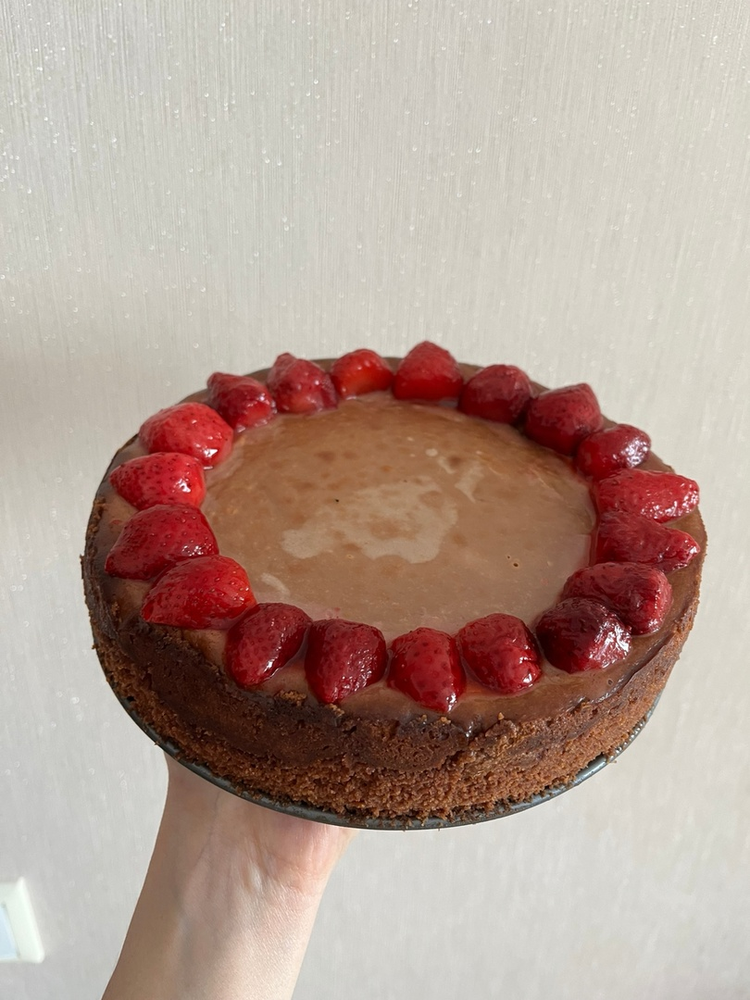

ШОКОЛАДНЫЙ ЧИЗКЕЙК
КБЖУ на 1 порцию - 962/16/67/72
Время приготовления - 8 часов
Сложность - средне
ИНГРИДИЕНТЫ НА 1 ПОРЦИЮ:
- Сливочное масло - 150гр
- Шоколадное печенье - 250гр
- Сливочный сыр - 500гр
- Яйцо - 4 шт
- Сахар - 150гр
- Сметана 20% - 200гр
- Горький шоколад - 300гр
- Сливки 33% - 150мл
СПОСОБ ПРИГОТОВЛЕНИЯ:
Шаг 1:
Сливочное масло растапливаем на водяной бане. Печенье превращаем в крошку (в блендере или разминаем толкушкой). Соединяем масло с печеньем, размешиваем массу и выкладываем в разъемную форму (диаметр формы 20–22 см). Разравниваем по донышку, утрамбовываем и ставим форму в разогретую до 170 градусов духовку. Через десять минут достаем, даем основе остыть.
Шаг 2:
Начинка шоколадного чизкейка. Сливочный сыр взбиваем с сахаром в кремообразную массу. Пользуемся венчиком, если взбивать крем миксером, чизкейк может осесть во время выпекания. Вбиваем по одному яйца, после каждого тщательно размешивая начинку. Кладем сметану. Шоколад нужно растопить на водяной бане и в последнюю очередь добавлять в начинку. Выкладываем получившийся крем на основу, разравниваем, ставим в духовку с температурой 160 градусов.
Шаг 3:
Выпекаем в течение часа, не забываем поставить в духовку емкость с водой. Чтобы определить пропекся ли чизкейк, постучите ложкой по бортику формы, должна подрагивать только серединка — это верный признак готовности. Готовый чизкейк оставляем в духовке для медленного остывания. Через час вынимаем и охлаждаем при комнатной температуре, затем убираем в холодильник часов на пять.
Шаг 4:
Для глазури сливки нагреваем почти до кипения, кладем кусочки шоколада, размешиваем и распределяем по чизкейку. Снова убираем в холодильник на полчаса. Когда глазурь застынет, подаем чизкейк к столу и наслаждаемся великолепным вкусом.
По желанию можно украсить ягодами или кокосовой стружкой. ПРИЯТНОГО АППЕТИТА!